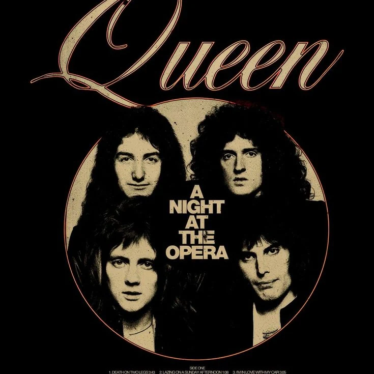
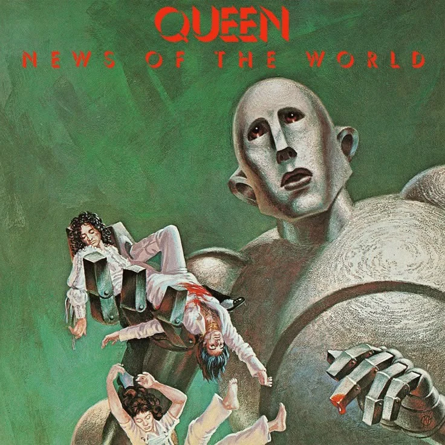
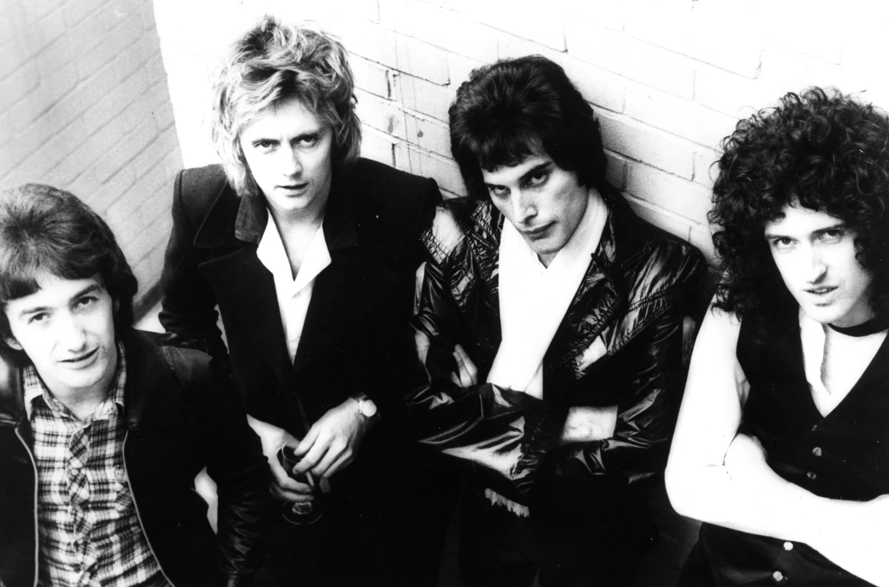
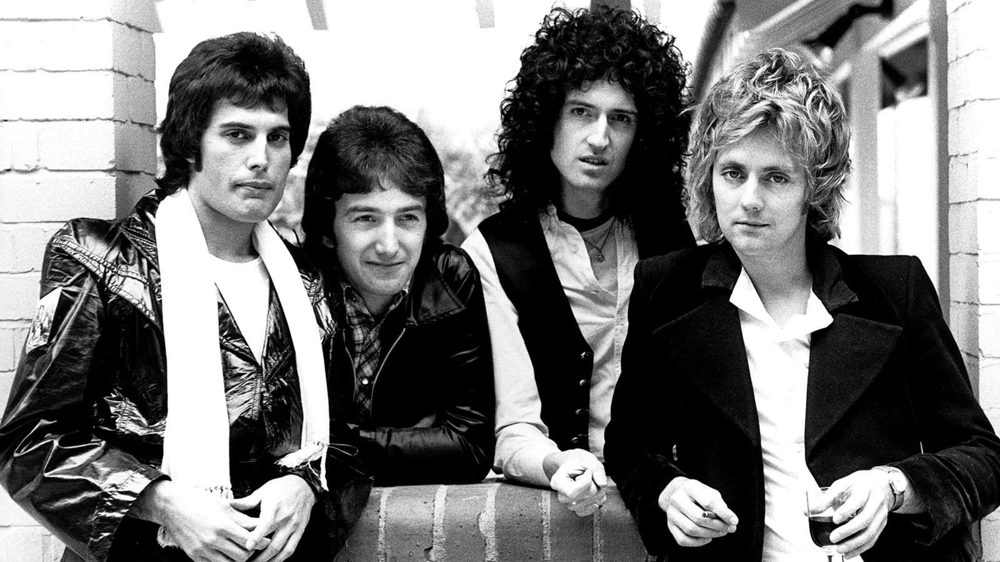

Bohemian Rhapsody
A theatrical song structure that became one of Queen’s strongest identities.
THE LEGACY OF QUEEN
Explore Queen through legendary songs, unforgettable performances, timeless visuals, and the legacy of one of rock's greatest bands.
Featured Music

A theatrical song structure that became one of Queen’s strongest identities.

A stomp-clap anthem built around direct audience participation.

Layered vocals and gospel influence presented through Queen’s rock style.
Featured Performance
A defining stage moment that captures Queen’s energy, audience connection, and lasting live reputation.
Watch PerformanceAbout Queen
The classic lineup of Queen consists of Freddie Mercury, Brian May, Roger Taylor, and John Deacon. Together, they created a sound shaped by powerful vocals, layered guitars, tight rhythm, and theatrical performance.
Meet the Members
Fan Community
Share favorite songs, discuss live moments, and connect with other fans.
Join Fan Zone